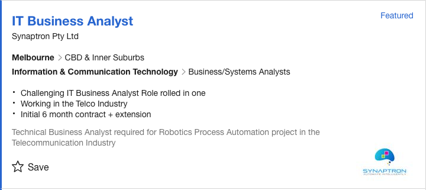

MY PROFILE
My Background
Myeducation has been through RMIT in the IT field. Having moved around particular areas of IT in the workforce ranging from - Web Design and Development, IT Solutions, Search Engine Optimisation, etc.
My Education: about education
Hobbies: about hobbies
Interest in IT
Really anything that continues to push me further...
to I would be looking at a Business Analyst role or Security Consultant in the future. I'm very much interested in the security field and business management, so I'd hope to move into one of those areas and continue learning of the many different facets of IT. While interested in into one of those fields, I would hope to have time available to allow for me to stay within the education sector.
Ideal Job
Really anything that continues to push me further Business-Analyst
to ooking at a Business Analyst role or Security Consultant in the future. I'm very much the security field and business management, so I'd hope to move into one of those areas and continue learning of the many different facets of IT. While interested in transitioning into one of those fields, I would hope to have time available to allow for me to stay within the education sector.
Personal profile
Myers-Briggs Test
The 16 personality test..Myers-Briggs shows
Learning Style Test
... to answer the question I would be looking at a Business Analyst role or Security Consultant in the future. I'm very much interested in the security field and business management, so I'd hope to move into one of those areas and continue learning of the many different facets of IT. While interested in transitioning of those fields, I would hope to have time available to allow for me to stay within the education sector.

Creativity Test
test

PROJECT IDEA
Overview
Really anything that continues to push me further...
But to r the question I would be looking at a Business Analyst role or Security Consultant in the future. I'm very much interested in the security field and business management, so I'd hope to move into one of those areas and continue learning of the many different facets of IT. While interested in transitioning into one of those fields, I would hope to have time available to allow for me to stay within the education sector.
Motivation
Really anything that continues to push me further...
But to answer the question I would be looking at a Business Analyst role or Security Consultant in the future. I'm very much interested in the security field and business management, so I'd hope to move into one of those areas and continue learning of the many different facets of IT. While interested in transitioning into one of those fields, I would hope to have time available to allow for me to stay within the education sector.
Description
Really anything that continues to push me further...
... But to answer the question I would be looking at a Business Analyst role or Security Consultant in the future. I'm very muh interested in the security field and business management, so I'd hope to move into one of those areas and continue learning of the many different facets of IT. While interested in transitioning into one of those fields, I would hope to have time available to allow for me to stay within the education sector.
Tools and Technologies
Really anything that continues to push me further...
... But to answer the question I would be looking at a Business Analyst role or Security Consultant in the future. I'm very much interested in the security field and business management, so I'd hope to move into one of those areas and continue learning of the many different facets of IT. While interested in transitioning into one of those fields, I would hope to have time available to allow for me to stay within the education sector.
Skills Required
Really anything that continues to push me further...
... But to answer the question I would be looking at a Business Analyst role or Security Consultant in the future. I'm very much interested in the security field and business management, so I'd hope to move into one of those areas and continue learning of the many different facets of IT. While interested in transitioning into one of those fields, I would hope to have time available to allow for me to stay within the education sector.
Outcome
Really anything that continues to push me further...
... But to answer the question I would be looking at a Business Analyst role or Security Consultant in the future. I'm very much interested in the security field and business management, so I'd hope to move into one of those areas and continue learning of the many different facets of IT. While interested in transitioning into one of those fields, I would hope to have time available to allow for me to stay within the education sector.